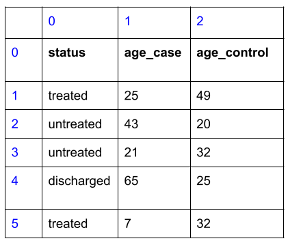
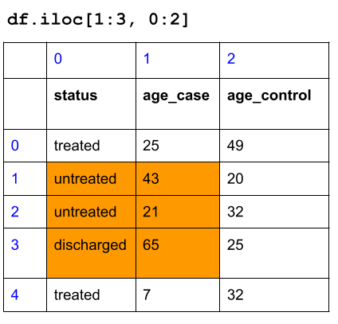

Chapter 2 Working with data structures
In our second lesson, we start to look at two data structures, Lists and Dataframes, that can handle a large amount of data for analysis.
2.1 Lists
In the first exercise, you started to explore data structures, which store information about data types. You explored lists, which is an ordered collection of data types or data structures. Each element of a list contains a data type or another data structure.
We can now store a vast amount of information in a list, and assign it to a single variable. Even more, we can use operations and functions on a list, modifying many elements within the list at once! This makes analyzing data much more scalable and less repetitive.
We create a list via the bracket [ ] operation.
staff = ["chris", "ted", "jeff"]
chrNum = [2, 3, 1, 2, 2]
mixedList = [False, False, False, "A", "B", 92]2.1.1 Subsetting lists
To access an element of a list, you can use the bracket notation [ ] to access the elements of the list. We simply access an element via the “index” number - the location of the data within the list.
Here’s the tricky thing about the index number: it starts at 0!
1st element of chrNum: chrNum[0]
2nd element of chrNum: chrNum[1]
…
5th element of chrNum: chrNum[4]
With subsetting, you can modify elements of a list or use the element of a list as part of an expression.
2.1.2 Subsetting multiple elements of lists
Suppose you want to access multiple elements of a list, such as accessing the first three elements of chrNum. You would use the slice operator :, which specifies:
the index number to start
the index number to stop, plus one.
If you want to access the first three elements of chrNum:
## [2, 3, 1]The first element’s index number is 0, the third element’s index number is 2, plus 1, which is 3.
If you want to access the second and third elements of chrNum:
## [3, 1]If you want to access everything but the first three elements of chrNum:
## [2, 2]Here, the stop index number was not specificed. When the start or stop index is not specified, it implies that you are subsetting starting the from the beginning of the list or subsetting to the end of the list, respectively:
## [2, 3, 1]## [2, 2]There are other popular uses of the slice operator :, such as negative indicies to count from the end of a list, or subsetting with a fixed increment. You can find more discussion of list slicing here.
2.2 Objects in Python
The list data structure has an organization and functionality that metaphorically represents a pen-and-paper list in our physical world. Like a physical object, we have examined:
What does it contain (in terms of data)?
What can it do (in terms of operations and functions)?
And if it “makes sense” to us, then it is well-designed.
The list data structure we have been working with is an example of an Object. The definition of an object allows us to ask the questions above: what does it contain, and what can it do? It is an organizational tool for a collection of data and functions that we can relate to, like a physical object. Formally, an object contains the following:
Value that holds the essential data for the object.
Attributes that store additional data for the object.
Functions called Methods that can be used on the object.
This organizing structure on an object applies to pretty much all Python data types and data structures.
Let’s see how this applies to the list:
Value: the contents of the list, such as
[2, 3, 4].Attributes that store additional values: Not relevant for lists.
Methods that can be used on the object:
chrNum.count(2)counts the number of instances 2 appears as an element ofchrNum.
Object methods are functions that does something with the object you are using it on. You should think about chrNum.count(2) as a function that takes in chrNum and 2 as inputs. If you want to use the count function on list mixedList, you would use mixedList.count(x).
Here are some more examples of methods with lists:
| Function method | What it takes in | What it does | Returns |
|---|---|---|---|
chrNum.count(x) |
list chrNum, data type x |
Counts the number of instances x appears as an element of chrNum. |
Integer |
chrNum.append(x) |
list chrNum, data type x |
Appends x to the end of the chrNum. |
None (but chrNum is modified!) |
chrNum.sort() |
list chrNum |
Sorts chrNum by ascending order. |
None (but chrNum is modified!) |
chrNum.reverse() |
list chrNum |
Reverses the order of chrNum. |
None (but chrNum is modified!) |
2.3 Dataframes
A Dataframe is a two-dimensional data structure that stores data like a spreadsheet does.
The Dataframe data structure is found within a Python module called “Pandas”. A Python module is an organized collection of functions and data structures. The import statement below gives us permission to access the “Pandas” module via the variable pd.
To load in a Dataframe from existing spreadsheet data, we use the function pd.read_csv():
## <class 'pandas.core.frame.DataFrame'>There is a similar function pd.read_excel() for loading in Excel spreadsheets.
Let’s investigate the Dataframe as an object:
What does a Dataframe contain (in terms of data)?
What can a Dataframe do (in terms of operations and functions)?
2.3.1 What does a Dataframe contain (in terms of data)?
We first take a look at the contents:
## ModelID ... OncotreeLineage
## 0 ACH-000001 ... Ovary/Fallopian Tube
## 1 ACH-000002 ... Myeloid
## 2 ACH-000003 ... Bowel
## 3 ACH-000004 ... Myeloid
## 4 ACH-000005 ... Myeloid
## ... ... ... ...
## 1859 ACH-002968 ... Esophagus/Stomach
## 1860 ACH-002972 ... Esophagus/Stomach
## 1861 ACH-002979 ... Esophagus/Stomach
## 1862 ACH-002981 ... Esophagus/Stomach
## 1863 ACH-003071 ... Lung
##
## [1864 rows x 30 columns]It looks like there are 1864 rows and 30 columns in this Dataframe, and when we display it it shows some of the data.
We can look at specific columns by looking at attributes via the dot operation. We can also look at the columns via the bracket operation.
## 0 ACH-000001
## 1 ACH-000002
## 2 ACH-000003
## 3 ACH-000004
## 4 ACH-000005
## ...
## 1859 ACH-002968
## 1860 ACH-002972
## 1861 ACH-002979
## 1862 ACH-002981
## 1863 ACH-003071
## Name: ModelID, Length: 1864, dtype: object## 0 ACH-000001
## 1 ACH-000002
## 2 ACH-000003
## 3 ACH-000004
## 4 ACH-000005
## ...
## 1859 ACH-002968
## 1860 ACH-002972
## 1861 ACH-002979
## 1862 ACH-002981
## 1863 ACH-003071
## Name: ModelID, Length: 1864, dtype: objectThe names of all columns is stored as an attribute, which can be accessed via the dot operation.
## Index(['ModelID', 'PatientID', 'CellLineName', 'StrippedCellLineName', 'Age',
## 'SourceType', 'SangerModelID', 'RRID', 'DepmapModelType', 'AgeCategory',
## 'GrowthPattern', 'LegacyMolecularSubtype', 'PrimaryOrMetastasis',
## 'SampleCollectionSite', 'Sex', 'SourceDetail', 'LegacySubSubtype',
## 'CatalogNumber', 'CCLEName', 'COSMICID', 'PublicComments',
## 'WTSIMasterCellID', 'EngineeredModel', 'TreatmentStatus',
## 'OnboardedMedia', 'PlateCoating', 'OncotreeCode', 'OncotreeSubtype',
## 'OncotreePrimaryDisease', 'OncotreeLineage'],
## dtype='object')The number of rows and columns are also stored as an attribute:
## (1864, 30)2.3.2 What can a Dataframe do (in terms of operations and functions)?
We can use the .head() and .tail() methods to look at the first few rows and last few rows of metadata, respectively:
## ModelID PatientID ... OncotreePrimaryDisease OncotreeLineage
## 0 ACH-000001 PT-gj46wT ... Ovarian Epithelial Tumor Ovary/Fallopian Tube
## 1 ACH-000002 PT-5qa3uk ... Acute Myeloid Leukemia Myeloid
## 2 ACH-000003 PT-puKIyc ... Colorectal Adenocarcinoma Bowel
## 3 ACH-000004 PT-q4K2cp ... Acute Myeloid Leukemia Myeloid
## 4 ACH-000005 PT-q4K2cp ... Acute Myeloid Leukemia Myeloid
##
## [5 rows x 30 columns]## ModelID PatientID ... OncotreePrimaryDisease OncotreeLineage
## 1859 ACH-002968 PT-pjhrsc ... Esophagogastric Adenocarcinoma Esophagus/Stomach
## 1860 ACH-002972 PT-dkXZB1 ... Esophagogastric Adenocarcinoma Esophagus/Stomach
## 1861 ACH-002979 PT-lyHTzo ... Esophagogastric Adenocarcinoma Esophagus/Stomach
## 1862 ACH-002981 PT-Z9akXf ... Esophagogastric Adenocarcinoma Esophagus/Stomach
## 1863 ACH-003071 PT-LAGmLq ... Lung Neuroendocrine Tumor Lung
##
## [5 rows x 30 columns]Both of these functions (without input arguments) are considered as methods: they are functions that does something with the Dataframe you are using it on. You should think about metadata.head() as a function that takes in metadata as an input. If we had another Dataframe called my_data and you want to use the same function, you will have to say my_data.head().
2.3.2.1 Subsetting Dataframes
Perhaps the most important operation you will can do with Dataframes is subsetting them. There are two ways to do it. The first way is to subset by numerical indicies, exactly like how we did for lists.
You will use the iloc and bracket operations, and you give two slices: one for the row, and one for the column.
Let’s start with a small dataframe to see how it works before returning to metadata:
df = pd.DataFrame(data={'status': ["treated", "untreated", "untreated", "discharged", "treated"],
'age_case': [25, 43, 21, 65, 7],
'age_control': [49, 20, 32, 25, 32]})
df## status age_case age_control
## 0 treated 25 49
## 1 untreated 43 20
## 2 untreated 21 32
## 3 discharged 65 25
## 4 treated 7 32Here is how the dataframe looks like with the row and column index numbers:

Subset the second to fourth rows, and the first two columns:

Now, back to metadata dataframe:
Subset the first 5 rows, and first two columns:
## ModelID PatientID
## 0 ACH-000001 PT-gj46wT
## 1 ACH-000002 PT-5qa3uk
## 2 ACH-000003 PT-puKIyc
## 3 ACH-000004 PT-q4K2cp
## 4 ACH-000005 PT-q4K2cpIf we want a custom slice that is not sequential, we can use an integer list. Subset the last 5 rows, and the 1st and 10 and 21th column:
## PatientID GrowthPattern WTSIMasterCellID
## 5 PT-ej13Dz Suspension 2167.0
## 6 PT-NOXwpH Adherent 569.0
## 7 PT-fp8PeY Adherent 1806.0
## 8 PT-puKIyc Adherent 2104.0
## 9 PT-AR7W9o Adherent NaN
## ... ... ... ...
## 1859 PT-pjhrsc Organoid NaN
## 1860 PT-dkXZB1 Organoid NaN
## 1861 PT-lyHTzo Organoid NaN
## 1862 PT-Z9akXf Organoid NaN
## 1863 PT-LAGmLq Suspension NaN
##
## [1859 rows x 3 columns]When we subset via numerical indicies, it’s called explicit subsetting. This is a great way to start thinking about subsetting your dataframes for analysis, but explicit subsetting can lead to some inconsistencies in the long run. For instance, suppose your collaborator added a new cell line to the metadata and changed the order of the column. Then your code to subset the last 5 rows and the columns will get you a different answer once the spreadsheet is changed.
The second way is to subset by the column name and comparison operators, also known as implicit subsetting. This is much more robust in data analysis practice. You will learn about it next week!
2.4 Exercises
Exercise for week 2 can be found here.